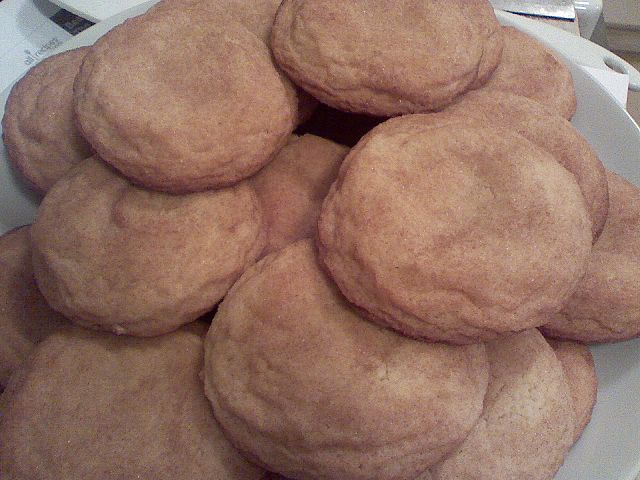

Snickerdoodle Cookies

Description
These are the best Snickerdoodle cookies on allrecipes. This recipe is pretty easy and straight-forward; just don't forget the cream of tartar that gives the cookies the distinctive tangy flavor and soft texture. According to some reviews, these cookies make many people remember their grandparents' snickerdoodle cookies.
Ingredients (makes 30 cookies)
Cookies
- 1 ½ cups white sugar
- 1 cup softened butter
- 2 eggs
- 2 ¾ cups all-purpose flour
- 2 teaspoons cream of tartar
- 1 teaspoon baking soda
- ¼ teaspoon salt
Coating
- 2 tablespoons white sugar
- 2 teaspoons ground cinnamon
Directions
- Preheat oven to 400 degrees F (200 degrees C). Line a baking sheet with parchment paper or lightly grease.
- Stir together the flour, baking soda, salt and instant pudding powder; set aside.
- Beat 1 1/2 cups white sugar, butter, and eggs together in a bowl using an electric mixer until smooth and creamy. Combine flour, cream of tartar, baking soda, and salt in a separate bowl; stir into creamed butter mixture until dough holds together.
- Mix 2 tablespoons white sugar and cinnamon together in a bowl.
- Form dough into 2-teaspoon-size balls and roll in the cinnamon-sugar mixture. Place dough balls, about 2 inches apart, on the prepared baking sheet.
- Bake for 8 to 10 minutes in the preheated oven, until lightly golden. Cool on baking sheets for a few minutes before removing to wire racks to cool completely.
Nutritional Facts per Cookie
- 120 calories
- 1.4g protien
- 16.5g carbohydrates
- 5.5g fat
- 23.9g cholesterol
- 91.6mg sodium
Source for recipe
Return to all recipes